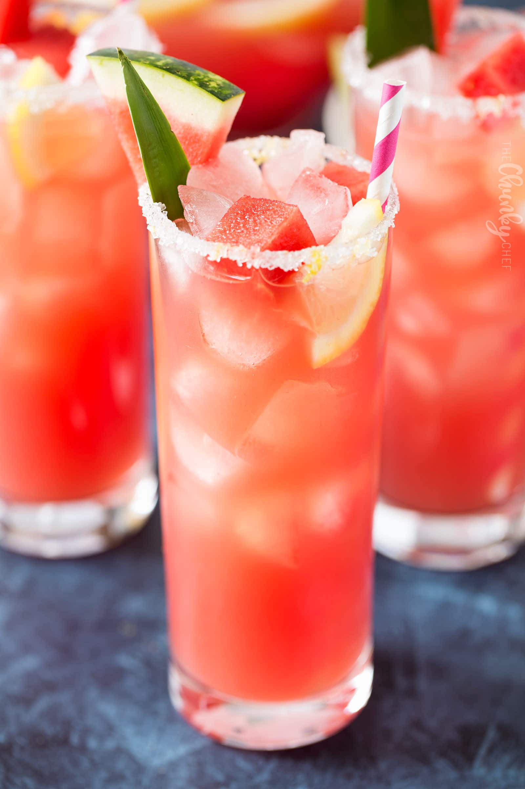

Watermelon Lemonade

Ingredients
- 3 1/2 cups water
- 1/2 cup white sugar
- 4 cups cubed watermelon
- 1/2 cup lemon juice
Directions
- In a blender, puree watermelon cubes until smooth. Strain through a fine mesh sieve.
- Add sugar to 1/2 cup water and boil until sugar dissolves.
- Remove from heat.
- Stir in 3 cups of cold water and the lemon juice.